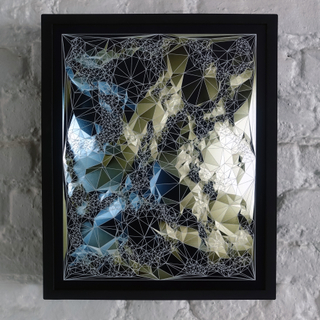

![Installation View, James Minden & Lab[au]](https://static-assets.artlogic.net/w_1500,h_1000,c_limit/exhibit-e/539f1b2ba9aa2c31208b4568/e4c672f5dab8784ee294ea66aefbafc0.jpeg)


![LAb[au], "0rigam1"](https://static-assets.artlogic.net/w_1500,h_1000,c_limit/exhibit-e/539f1b2ba9aa2c31208b4568/111319e74983a361a7bf10b03fb39918.jpeg)



JOANIE LEMERCIER

Muriel Guépin Gallery is pleased to present “ Chromatic Momentum” a group exhibit featuring six artists who work with the relation of shape and light, color and form, movement and perception and 2D and 3D. These are classical art notions that have been elevated and re-contextualized by these six artists in the digital age. At the center of these artists’ works is the formalistic thinking in combining traditional with new mediums, digital and analogue technologies. While some of these artists work directly with LED technology, others use less familiar materials to create light and movement to challenge our sense of reality and perception.
Most of the artists incorporate light into their artworks in order to bridge the gap between 2D and 3D. Joanie Lemercier constructs 3D geometric landscapes, using video mapping projection technology to “map” his drawings and animate them with lights. Zin Helena Song creates 3D geometric canvases lit from behind with LED lights to elevate the piece from the surrounding world. The collective Numen/For Use creates pieces that look like they are made of the physical manifestation of digital media. Their “Small Cube Membrane” sculpture is made of spy mirror glass and Led light bulbs, which creates a never-ending paradoxical loop of lines within the piece that vibrates and fluctuates as air gets push in and out inside the cube. Part of a kinetic series of works, LAb[au]’s delicate 0r1gam1_helix RGB (2014) exists in a state of flux. Like clockwork, this wall-mounted cluster of triangles slowly moves, revealing color underneath its otherwise pristine scales. As the individual segments flip, they mimic prisms, partially refracting the white surface into red, green and blue and creating elongated shadows onto the wall. Made from alumimun and animated with memory alloy springs, 0r1gam1_helix RGB produces random loops or sequential machinations that result in a constantly-changing sculpture. All of these artists bring the intangible idea of digital media into the realm of reality, and make it practical.
The last two artists in the show, François Wunschel and James Minden, both create 2D works that reflect light and make it seem like the piece is actually 3-dimensional. The basic geometric objects they depict appear robust and two- dimensional only for as long as we keep still. Move and so will they, making it impossible to see the same image from different angles. The instability of the image in their pieces really plays with how the human eye perceives reality. What does the piece actually look like if every angle manifests a different viewing of it?